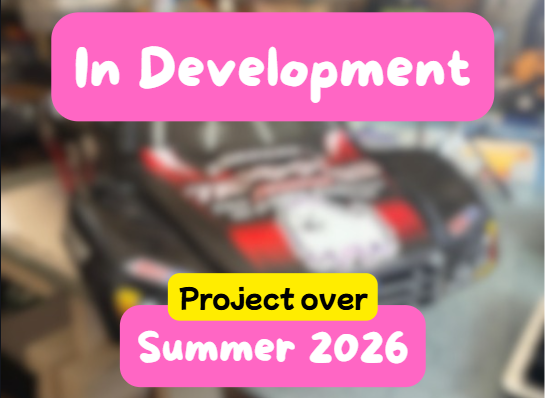
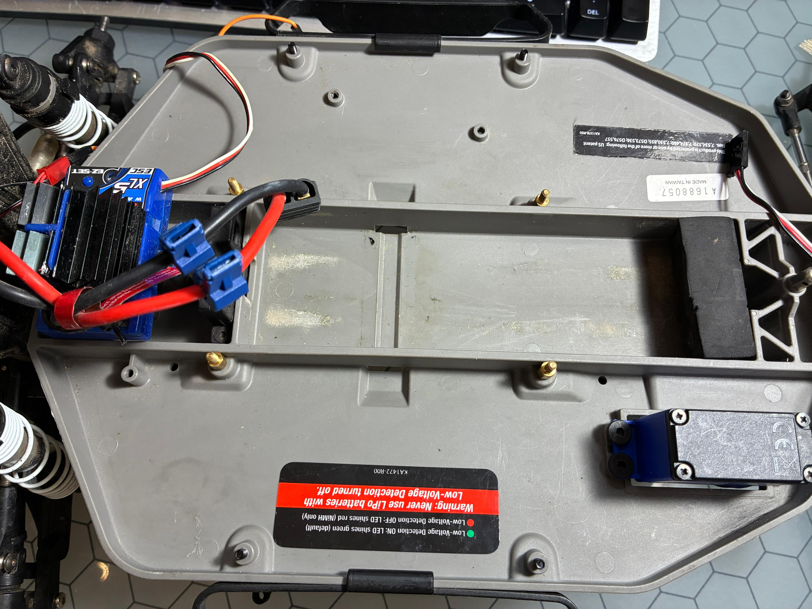
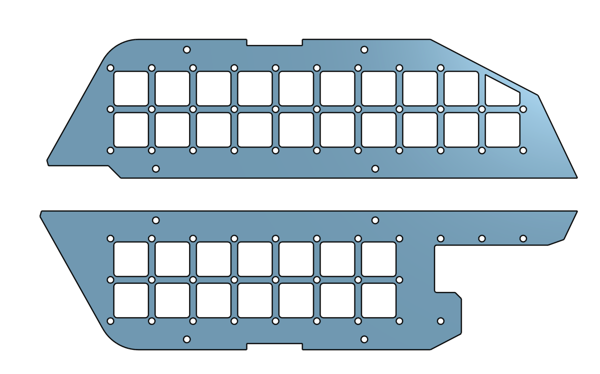

TrackBot

Introduction
This project is the first robotics project that connected with my love of XC (Cross-country). The PLAN is to use a Traxxas 2WD Slash as the car, a magnetic encoder to measure speed, and a camera running OpenCV to detect the lines on a 400m track (and maybe the running path in the wild). It would be run by a Raspberry Pi 5, and a 12v 5ah Li-on battery would power it. The main concern I have is the amp draw as it's accelerating, but that's for later.
The Start

The first step was to design some baseplates to mount every component I might need for the TrackBot. I decided to continue using Nikodem Bartnik's ORP chassis for its ease of use and modularity. The first issue was that the Traxxas Slash's chassis had basically zero mounting spots. But, the nerf bars and the central braces had screws that poked through the chassis (Figure 1). Those 8 holes ended up being the perfect spots to mount my ORP BasePlate. It took 3 iterations, mostly because there wasn't an accurate CAD model of the Slash's chassis, so I had to go old-fashioned with a caliper and guesstimations.

Change of Plan